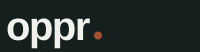

Oppr brand kit
oppr. and the o-monogram
The wordmark stays the baseline oppr. with its terracotta period. The icon is the first letter o carrying that same terracotta dot. One accent, everywhere.
Everything here is ready to use as-is. Nothing needs a font installed, and every file has a transparent background unless its name says otherwise.
Wordmark (outlined)use this
Font-independent paths, transparent, cropped to the mark. Use these unless you have a reason not to.

{kind=link}
{kind=link}
{kind=link}
{kind=link}
{kind=link}
{kind=link}
{kind=link}
{kind=link}
Wordmark (original)legacy
Live text needing Archivo installed, in a 200x52 box the mark does not fill. Kept so anything already pointing at them keeps working; prefer the outlined pair for anyone outside Oppr.

{kind=link}
{kind=link}
Icon / faviconuse this
The o-monogram on the ink tile. Pure geometry, so it needs no font and stays legible down to 16px.
{kind=link}
{kind=link}
{kind=link}
{kind=link}
{kind=link}
{kind=link}
{kind=link}
{kind=link}
Bare o. (no tile)use this
For inline use or wherever a transparent background is needed.
{kind=link}
{kind=link}
{kind=link}
{kind=link}
Clear space
Keep at least the height of the o clear on every side (22 units at the mark's own scale). The dashed line is the minimum, not a border to draw.
Colours
One accent per element. No gradients, and no shadows on the mark.
Type
Archivo 700, lowercase, letter-spacing -0.04em for the wordmark.
JetBrains Mono for UI labels, eyebrows and numbers. Both are open source under the
SIL Open Font License and available from Google Fonts; copies are bundled in
fonts/ so this page renders correctly offline.
Wordmark geometry · Archivo 700 at 40px,
letter-spacing -1.5, terracotta period r=4
Outlined artboard · 94.47 × 28.67 units, cropped to the mark
Using it
Do
- Use the outlined wordmark for anything leaving Oppr.
- Keep the wordmark lowercase, always.
- Keep the terracotta period. It is the signature.
- Pick the light or dark file to suit the background it sits on.
- Scale proportionally, and leave the clear space above.
Don't
- Recolour the period, or drop it.
- Capitalise it, or set it in another typeface.
- Add a gradient, shadow, outline or second accent.
- Stretch, skew, rotate or condense the mark.
- Place the light wordmark on a dark ground, or the reverse.
- Rebuild the mark by typing "oppr." and adding a dot.